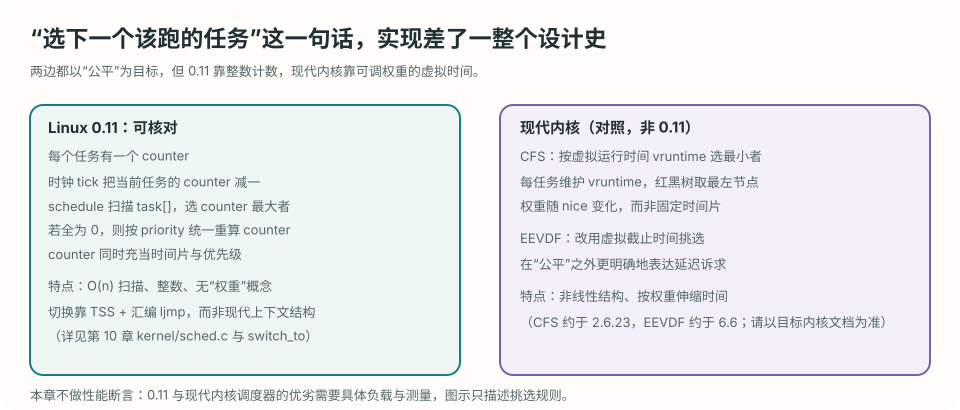

现代内核对比：只作对照，不回填历史
把现代内核的概念当成“对照坐标系”，而不是 0.11 的注解。凡是现代内容，本章都显式标注，以免读者把后来的机制误当成历史事实。
对照 · Buddy/SLUB · CFS/EEVDF · LKM/eBPF为什么不能拿现代内核直接对照 0.11？
很容易写出这样一句话：“0.11 的内存分配器就是现代 slab 的前身。”它听上去合理，却把两套抽象粒度不同的机制混为一谈。现代内核的内存管理至少有两层：页框层与对象缓存层；而 0.11 只有一层——一个按物理页计数的字节数组。本章的做法是：左边放 0.11 可核对的事实，右边放现代内核的设计，一一对照，不互相回填。
内存分配：从 mem_map 计数到伙伴系统与 SLUB
0.11 的页分配是 mm/memory.c 里的 get_free_page()：反向扫描 mem_map（一个按物理页计数的字节数组），找到计数为 0 的页，置为已用并清零。它一次只管理 4KiB 页，没有“阶”的概念；内核结构体要么固定占整页，要么是静态数组。
现代内核则在页框层用伙伴系统（按 2 的幂管理可分配/合并的页框），在对象层用 slab 家族（SLAB / SLUB / SLOB）为常用结构体建缓存。两者都把“分配”拆成了多级：先向伙伴系统取页，再切片成对象。这与 0.11 的单级页计数是不同层次的设计。
调度：从 counter 轮转到 CFS / EEVDF
0.11 的调度（见第 10 章的 kernel/sched.c）靠一个整数 counter：时钟 tick 把当前任务的 counter 减一，schedule() 扫描任务数组选 counter 最大者；若全部耗尽，则按 priority 统一重算。它同时把“时间片”与“优先级”编码在同一个整数里，没有“权重”这一层概念。
现代内核把公平性换成了虚拟时间：CFS 为每个任务维护 vruntime，用红黑树挑最小者，权重随 nice 伸缩；EEVDF 则用虚拟截止时间挑选，更明确地表达延迟诉求。此处只描述挑选规则，不作任何性能断言；具体版本与参数以目标内核文档为准。

模块与可编程数据路径
0.11 是单体内核：所有驱动与子系统在构建时就编进 Image，没有运行时加载模块的接口，也没有用户程序在内核里执行的机制。现代内核则多了两类“可扩展性”：
- 可加载内核模块（LKM）：在运行时把人编写的目标文件链入内核空间。它降低了“改功能必须重编内核”的成本，但也意味着模块与内核版本必须严格匹配。
- 可编程数据路径（eBPF / XDP）：将经过验证的程序在内核里执行，用于观测、过滤或早期收包。它把“内核里跑用户逻辑”变成一种受约束的能力。
把 0.11 与它们对比时，关键是记住两者的默认假设相反：0.11 假设内核代码集在启动时已固定，而现代内核包含“运行时扩展内核行为”的一整套基础设施。因此“0.11 的某个函数就是某个现代模块的前身”这类说法通常是错的。
为什么“schedule 用红黑树”不能写成 0.11 的事实？（展开核对）
因为 0.11 的 schedule() 是扫描 task[] 比较整数 counter，既没有红黑树，也没有 vruntime。把现代数据结构和字段名套到 0.11 上，会让读者以为那些变量在历史源码里存在。对照可以谈，事实不能串。
只读验证与正确边界
先证实“现代机制在 0.11 里不存在”，再谈对照：
grep -rn 'buddy\|slab\|kmalloc\|kfree' mm include kernel | head # 预期无现代分配器
grep -rn 'module\|insmod\|bpf' . --include=*.c --include=*.h | head # 预期无模块/eBPF
grep -n 'get_free_page\|mem_map\|USED' mm/memory.c # 0.11 的页计数
grep -n 'counter\|schedule' kernel/sched.c | head # 0.11 的调度预期结果是：伙伴系统/slab/eBPF/模块关键字均无匹配，而页计数与 counter 调度存在。这是源码静态实验；本章未编译、未运行现代内核，也不提供任何吞吐量或延迟对比数字——那需要可复现的测量，不属本文范围。
原始资料与下一章
- mm/memory.c（0.11）：mem_map、get_free_page、free_page。
- kernel/sched.c（0.11）：schedule、counter 与优先权重算。
- v0.11 源码归档：本章所有历史断言依据。
- 现代内核（伙伴/slab、CFS/EEVDF、模块、eBPF/XDP）请以你所用版本的官方文档与源码为准；本文不对其版本号作精确断言。
看完了机制与对照，最后把碎片拼成项目。下一章用一个小驱动与一个小系统调用，把从源码到构建的整条流程走一遍。